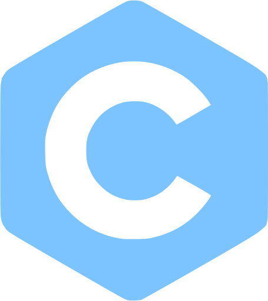
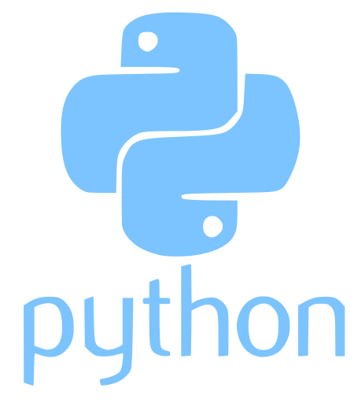

Ημερομηνία γέννησης: 8 / 5 / 2001
Τόπος γέννησης: Γενικό Νοσοκομείο Αγίου Νικολάου (Νομός Λασιθίου)
Διεύθυνση: Ταγματάρχου Μιχαήλ Ζαχαριάδη 14 – Μάλια
Σχολεία: Δεύτερο Δημοτικό σχολείο Μαλίων, Γυμνάσιο Μαλίων, Γενικό λύκειο Μαλίων
Πανελλαδικές εξετάσεις: Οικονομική κατεύθυνση (Έκθεση, Μαθηματικά, Αρχές οικονομικής θεωρείας, Πληροφορική), 2019
Σπουδές: ΕΛ.ΜΕ.ΠΑ. - Τμήμα ηλεκτρονικών μηχανικών (Χανιά, 2019-2024)
Ξένες Γλώσσες: Αγγλικά (Πτυχία: Beginner, Lower, Advanced), Γερμανικά
Αθλήματα: Ποδηλασία, Muay Thai, Kick Boxing, Tae Kwon Do (Πράσινη ζώνη)
Διπλώματα οδήγησης: Α1, A2, Α, Β
124 ΠΒΕ, Τρίπολη (4/11/24) - (29/11/24)
350 ΠΚΒ, ΣΠΥΠΑ, Σέδες, Θεσσαλονίκη (9/12/24) - (20/12/24)
133 ΣΜ, Καστέλλι (23/12/24) - (4/8/25)
ΚΕΔΑ Τυμπακίου (25/5/25) - (5/6/25)


Επιλογές, Επαναλήψεις, Συναρτήσεις, Δομές δεδομένων, Στοίβες, Δέντρα
Επιλογές, Επαναλήψεις, Συναρτήσεις, Κλάσεις, OpenCV

Επιλογές, Επαναλήψεις, Συναρτήσεις, Κλάσεις, NumPy, Matplotlib, SciPy, SQLite, Tkinter, NetworX, Tkinter-Canvas, OpenCV, Pandas, PyTorch
Επιλογές, Επαναλήψεις, Συναρτήσεις
Ανάπτυξη ιστοσελίδων:
Frontend: HTML5, CSS3, JavaScript
Backend: PHP
Άλλες γλώσσες: Linux εντολές, MIPS, VHDL, SQL, Visual Basics 6, Qt creator, Matlab
3D Animation/CAD: Blender, Fusion 360, KiCAD 7
Επεξεργασία βίντεο: Openshot, Shotcut
Επεξεργασία εικόνας: GIMP, Inkscape
Επεξεργασία ήχου: Audacity, Mixpad, Wavepad, Ardour, LMMS
Κυκλώματα: Multisim, Workbench, Tina TI
GIS: QGIS, Arcmap
Kastro Beach Apartments (Από το 2013 έως σήμερα)
Lapnet (17/7/2025 έως 29/8/2025)
PCplace (15/10/2025 έως 31/10/2026)
Μια ειδησεογραφική ιστοσελίδα, για ταινίες και νέες κυκλοφορίες, φτιαγμένη με HTML5, CSS3 και Javascript
Πατήστε εδώ για να το επισκεφθείτε